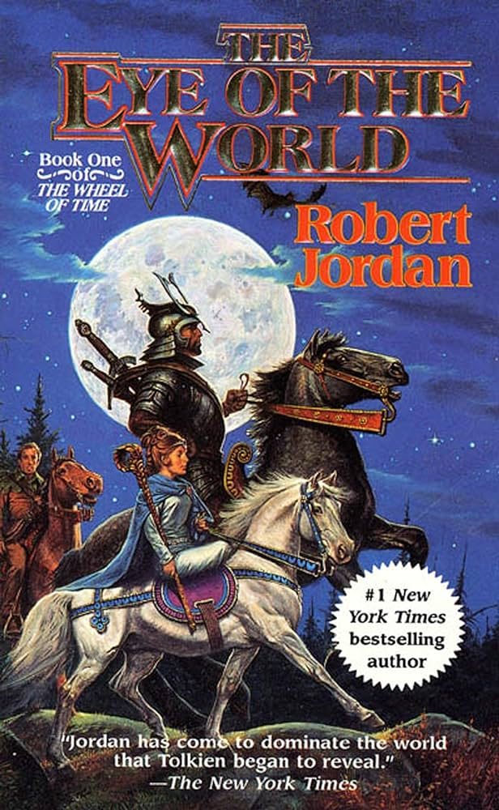

Assignment 4.2: Build a Web Page Exercise - Part 4
Eye of the World

author: Robert Jordan
Speaker for the Dead
author: Orson Scott Card
A Brief History of Intelligence
author: Max Bennett
Back to Landing Page